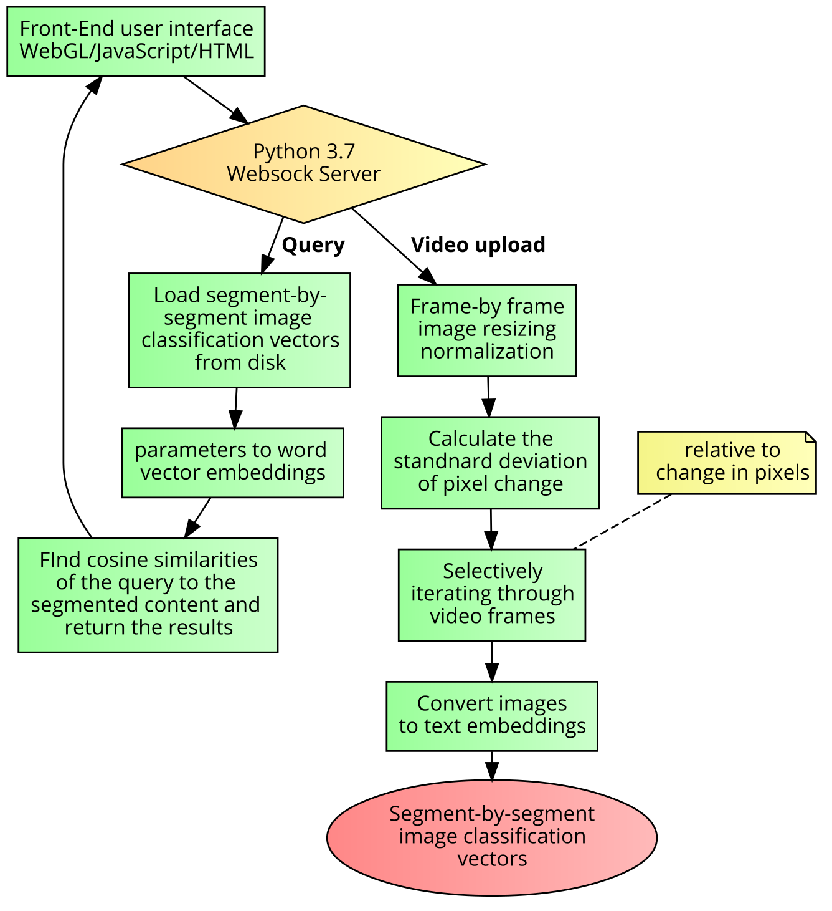

A Novel Multimodal Model for
Event Detection in
Videos
Ian Logan Wesson
(安龙)
June 2020
A Novel Multimodal Model for
Event Detection in
Videos
Candidate: Ian Logan Wesson 安龙
School of Study: School of Software
Student’s Number: 3820181125
Supervisor: 张华平 Hua Ping Zhang
Chair of Defense Committee: ?
Degree Applied: Master of Computer
Science
Major: Computer Science and
Technology
Date of Defense: June 2020
Declaration of
Originality
I hereby declare that this thesis is
the result of an independent research that I have made under the supervision of my supervisor.
To the best of my knowledge and belief, it does not contain any other published or unpublished
research work of others, or any material which has been accepted for the award of another degree
or diploma at Beijing Institute of Technology or other educational institutions, except where
due acknowledgment has been made in the text. Whoever has contributed to this study is
explicitly identified and appreciated in the Acknowledgements of the thesis.
Signature of
Author:
Date:
Authorization Statement
I
fully understand the regulations of Beijing Institute of
Technology regarding the preservation and use of the degree
thesis. BIT is granted the right to (1) preserve the
original thesis and the copies of the thesis, as well
as submit them to relevant authorities; (2) reproduce and
preserve the thesis by means of photocopy, reduction
printing and any other means; (3) keep the thesis for
reference and borrowing; (4) reproduce, give and exchange
the thesis for the purpose of academic exchange; (5) publish
the thesis
wholly and partially. (The regulations
comes into force for confidential thesis only after
declassification)
Student’s signature： Date:
Supervisor’s signature： Date:
Thank you Prof. ... and Rep. of China for this opportunity. I hope these advances
will be applied.
Querying videos for many types of information, from cats and dogs, to instances of
crime, abuse, violence or terrorism, in a way that returns a frame-by-frame analysis is becoming more and
more important with the rapid expansion of online videos, especially for social media sites. Although there
is some research into video classification, event detection in video analysis is still largely
underdeveloped. For starters, even readily available open- source research into video event detection does
not use a multimodal approach. Moreover, natural language processing and linguistic modalities are often not
even used as a
way of detecting events in any video analysis software. Last but not least, all frame-by-frame solutions to
video analysis are proprietary or closed-source.
Compared to other modern video analysis tools and techniques, the proposed
framework: (1) will implement a novel multimodal model for detecting events; (2) will utilize existing
natural language processing software as an intermediate processing layer; and (3) will not be
proprietary or closed source, but instead be built from entirely open-source software and hosted on a
publicly accessible source code revision control platform (GitHub). The proposed framework has changed
since there has been time to develop it, as many different tools and methodologies were briefly tested
as a robust prototype system evolved over the duration of the research (and this discussed in
detail at the beginning of ??).
When a set of input videos are given, the output of the novel model is the
probability that a given query event string occurs in each of the input videos frames. The videos
can then be sorted frame-by-frame according to the likelihood of them depicting that particular
query event. This will allow for more effective content monitoring, as well as more effective
content browsing in general.
Key
Words: Multimodal;
Neural Network; Machine Learning; Computer Vision; Natural Language Processing; Audio Signal
Processing; Time Series Prediction;
The proposed framework was designed around a novel multimodal model which would
process the output of the following open-source NodeJS software solutions: automatic speech recognition
(using the deepspeech npm library), object detection (using the opencv4nodejs or tensorflowjs npmlibraries),
and natural language processing (using the word2vector npm library).
The main objective of the work proposed was finding the best combinations of
libraries, programming tools, and even operating systems, suitable for creating an efficient and
innovative neural network applications research and development environment. During this extensive
search, different API’s, such as OpenCV, PyTorch, and TensorFlow, in various languages, including NPM/NodeJS,
JavaScript, and Python, were tested on the Windows 10, Ubuntu 19.04, and Linux Mint 19.3 operating
systems.
After testing these combinations, it was found that Linux Mint with Pytorch
and TensorFlow/Keras in Python 3.6.9 was the best combination of software technologies for reliably
running experiments on our particular hardware setup.
As such, all of of the code segments, final project code, and diagrams
of this research project are for Pytorch and TensorFlow/Keras in Python 3.6.9. You can find an
online copy of the final project code on GitHub. The project link you should refer to when
reading this document is a link is to a specific branch named ”thesis” of a GitHub repository
(which will host future developments on the ”master” branch):
https://github.com/CrazedCoding/CrazedCoding.com/tree/thesis
One of the accomplishments of this research includes a multimodal
neural network model based system that allows users to process videos frame-by-frame for
images with content of varying degrees of similarity to query string parameters. The research on this topic
covered in
and the experiments are in
covered in detail in
The second accomplishment of this
research was the creation of a command-line tool which enabled the user to train a
multi-layer neural network to learn and predict audio samples. The research on this topic
covered in
and the experiments are in
.
Introduction should be 3 Sections: (1.1) background (why you do this work?)
(1.2) previous work (what have others done (briefly)? what are the advantages/disadvantages?)
(1.3) paper structure (how is this paper organized?)
Put table captions above table.
Replace table/figure/code section
Existing Techniques -> "Works Related to Video Event Detection"
Change subsections of chapter 2 (longer):
2.1 - Event Detection on Videos
2.2 - Deep Learning
2.3 - Audio Signal Analysis
2.4 - Computer Vision
2.5 - NLP
2.6 - Multimodal Models
After chapter 2 you can only use your own work.
Multimodal Model Architectures for Event Detection
3.1 Architecture design (include table 4.1a and 4.2a should go here).
Explain relationship to other architectures.
What are the advantages of this architecture.
4.1 -> new chapter 4 (include "experiment" in name)
4.1.1 -> How-To
4.2 -> new chapter 5 (include "experiment" in name)
Add new chapter 6 -> "System Implementation"
(1) System name.
(2) Copy GitHub page ("Server Installation and Configuration")
(3) Screenshots
Remove chapter number from conclusion/references.
Add final section "Future Work"
- We ran out of time.
Add "Chapter" to chapter numbers in TOC.
Fix bibtex reference to be like Yvette's paper.
The following three sections provide a detailed overview of the state-of the art
research into event detection in videos.
has the following to say about
semantic event
detection:
Recently, many researchers have tried to detect the most interesting
events and concepts from
videos (, ). Criminal event detection from video and audio data, natural disaster retrieval
from video
data, and interesting event detection in a sport game are a few examples of video semantic event detection.
then goes into detail about it’
s proposed ensemble deep learning framework:
Deep learning is not a new topic and has a long history in artificial
intelligence (). Convolutional Neural Networks (CNNs) , for instance, have improved traditional
feedforward neural networks in 1990s, especially in image processing, by constraining the complexity of
networks using local weight sharing topology. Traditional neural network techniques are difficult to
interpret due to their black-box nature and they are also very prone to over-fitting . In contrast,
new deep learning algorithms are more interpretable because of their strong local modeling. In addition,
as new ideas, algorithms, and network architectures have been designed in the last few years, deep
learning has shown significant advances mainly in image recognition and object detection.
As a single classifier may not be able to handle large datasets with
multiple feature sources, ensemble algorithms have attracted lots of attention in the literature,
which can be utilized to enhance the classification performance by taking advantages of multiple
classifiers. A positive enhanced ensemble algorithm which handles imbalanced data in video event
retrieval is presented . Their proposed framework combines
a sampling-based method with a
classifier fusion algorithm to enhance the detection of interesting events (minor classes) in an
imbalanced sport video dataset. An ensemble neural network is proposed in .

Using a bootstrapped
sampling approach along with a group of neural networks, the rare event issue is alleviated. The
framework was also evaluated using a large set of soccer videos with the purpose of corner event
detection.
’s method is divided into
three main modules: (1) preprocessing, (2) deep feature
extraction, and (3) classification including training, validation, and testing. concludes
that: “the experimental results demonstrate the effectiveness of the proposed framework for
video event detection.”
detection.
provides a good
classification of video sequences. It is included here as a potential solution for creating training
mechanisms for deep learning models.
In this paper, video semantic analysis is formulated
based on low-level image features and high-level knowledge. The
sports domain semantic knowledge encoded in the hierarchical classification not only reduces
the cost of processing data drastically, but also significantly increases the classifier accuracy.
The hierarchical framework enables the use of simple features and organizes the set of features
in a semantically meaningful way. The proposed hierarchical semantic framework for
event classification can be readily generalized to other sports domains as well as other types
of video.
According to , there are
basically two frameworks for fusing modalities:
Non-hierarchical Frameworks where unimodal features are concatenated and fed into
the various contextual LSTM networks proposed above (e.g., h-LSTM), and
Hierarchical Frameworks
where the difference here is that we don’ t concatenate unimodal features, we feed each
unimodal feature into the LSTM network proposed above.
Think of this framework as having
some hierarchy. In the first level, unimodal features are fed individually to LSTM networks.
The output of the first level are then concatenated and fed into another LSTM network (i.e.,
second level). provides the reader with an essential
overview of it’s proposed model.
It is as follows:
In testing the proposed model,
gives the following findings:
1. They observed
that hierarchical model significantly outperform the non-hierarchical frameworks.
2. They
observed that sc-LSTM and bc-LSTM models perform the best out of the LSTM variants, including
the uni-SVM model. These results helped to show the importance of considering contextual
information when classifying utterances.
3. In general, unimodal classifiers trained on
textual information performed better compared to other individual modalities (results highlighted
in blue). Combining the modalities tended to boost the performance, indicating that multimodal
methods are feasible and effective.
4. Individually, the visual modality caries
more generalized information. Overall, fusing the modalities improved the model.
For reference, the diagram demonstrating the multimodal model
from is included in
below.

To create a multimodal neural network we had to ascertain knowledge about a few
different modes, particularly the auditory, visual, and linguistic modalities. The following chapter
provides a detailed explanation of the research into these different modes. For reference,
the multimodal model system that was originally proposed is included below in
below:

Together, ,
in combination with and
(in the following chapters where the
final results are discussed) make it easy to discern the evolution of the research project’s
methodologies from start to finish as more was learned about the actual capabilities of the
software and hardware available.
The original time table for our neural network experiments was designed to test three
hypotheses to three questions which are listed in below, along with what our research and
experiments indicated about the answers.
|
Questions |
Hypotheses |
Answers |
Is it possible to use entirely open-source
technology to build the framework of a video based event detection algorithm?
|
Yes, because there are many open source
projects
for the basic requirements of such a framework. |
Moderately supported by research described in
sections . Not supported by experiments at all (due to noise).
|
Is there a multimodal model for fast and
accurate
event detection on video media?
|
Yes. This hypothesis is based on the fact
current
research is capable of detecting anomalous and suspicious activity in images.
|
Highly supported by all of the reserch and in this chapter's research, and the experiments described in ,
particularly the one described in .
|
Can multimodal models improve the performance
of
content moderators?
|
Yes, because video content can be more
accurately
and precisely analyzed for events.
|
This is highly supported by the video processing research and experiments
, and the moderator’s point of view is demonstrated in
|
Most of our hypotheses were strongly supported by the results the experiments
(described in chapter 4), with one notable exception to the first question and hypothesis: our
research indicated that even though there are many open-source software solutions for automatic
speech recognition (ASR), virtually all of them suffer from severe inaccuracy when
transcribing audio without proper recording conditions or denoising techniques. The decision
was made to abandon ASR as a solution for creating one of the modes for the multimodal network.
The pitfall of losing the preferred choice of auditory mode (spoken words from audio
signals transcribed as text) made the process of creating a multimodal system difficult because
our only other preferred choices of modes were going to be the visual and spacial modes of a
video stream.
In addition to the aforementioned pitfall, there was another major pitfall: the
variety
of information available as output from pretrained object detection algorithms (which we
planned to use for the visual and spacial modes of our multimodal system) was very limited:
most pretrained object detection models for desktop environments can produce a maximum
of around 10 visual classes (the types of the objects detected), which, even in combination
with spacial output mode of object detection algorithms (the positions of the objects detected),
could not fulfil the requirement of producing a search space out of the input videos (which
had a variety of types of content) accurate, precise, or even organized enough to query for
generalized user search string parameters.
The two aforementioned pitfalls meant that we could not use ASR or object detection
to create any of the input modes for our multimodal system as we had planned to initially.
To meet time requirements, image classification models would instead be used for the visual
mode of the system, which could output around 1000 different output classes per image.
Additionally, natural language processing (NLP) word embeddings would be used to create
a linguistic mode of input for our multimodal system.
Even though using these two modes of input (visual and linguistic) for our system
would
meet the initial requirement of creating a multimodal system, doing just this would have
meant the final product of our video-processing research would entirely ignore the audio. The
research project was initially designed to include audio signal analysis (in the form of ASR)
to create a complete understanding of applying multimodal neural networks in the context
visual and auditory analysis of videos, so following the conclusion of our research and experiments with
video processing (
and ,
respectively) we abruptly switched to audio signal analysis research and
experiments
(
and ,
respectively). The audio signal experiment comes in the form of a point-by-point signal frequency
prediction Python 3.6.9 program.
The following code segment demonstrates the most important process we found for
loading videos into memory. Our first approach was to use Pytorch’s torchvision.io module, but
we later opted for the SciPy ffmpeg-python module to process a video files frame-by-frame
using numpy because of it’s speed, versatility, and compatibility with Pytorch. You can find
out more about how we used this functionality by referencing ”audio_processing.py” in the
root folder of the GitHub branch accompanying this document.
import ffmpeg
import subprocess
import sys
import numpy as np
process1 = (
ffmpeg
.input(in_filename)
.output('pipe:', format='rawvideo', pix_fmt='rgb24')
.run_async(pipe_stdout=True)
)
process2 = (
ffmpeg
.input('pipe:', format='rawvideo', pix_fmt='rgb24',\\
s='{}x{}'.format(width, height))
.output(out_filename, pix_fmt='yuv420p')
.overwrite_output()
.run_async(pipe_stdin=True)
)
while True:
in_bytes = process1.stdout.read(width * height * 3)
if not in_bytes:
break
in_frame = (
np
.frombuffer(in_bytes, np.uint8)
.reshape([height, width, 3])
)
out_frame = in_frame * 0.3
process2.stdin.write(
frame
.astype(np.uint8)
.tobytes()
)
process2.stdin.close()
process1.wait()
process2.wait()
The following two subsections are meant to describe the research items that were most
useful for our experiments in the context of visual modes when analyzing video files using
neural networks.
............... ...
... ...
... ...
............... ...
... ...
... ...
............... ...
... ...
... ...
............... ...
... ...
... ...
............... ...
... ...
... ...
............... ...
... ...
... ...
............... ...
... ...
... ...
............... ...
... ...
... ...
............... ...
... ...
... ...
............... ...
... ...
... ...
............... ...
... ...
... ...
............... ...
... ...
... ...
............... ...
... ...
... ...
............... ...
... ...
... ...
The system in the following diagram is a representation the client-server application
we created which combines the modalities of the frame images (from user-provided videos) with the their
word embeddings (or multi-dimensional meaning representations of a word). This creates the
desired ability for the end user to query complex concepts via the linguistic modality (rather
than a series of individual image classifications) quickly and efficiently, with ever improving
accuracy and precision with each refinement of a query.

Because the entirety of a user’s video content is pre-processed and stored in word
vector
embeddings upon uploading, binary search procedures of the entire domain of a user’s uploaded video content can
be strategically reorganized categorically with rapid efficiency by
the server system, and with very little effort by the end-user. This multimodal functionality
ran with incredible efficiently on the prototype system.
Develop an event detection algorithm prototype for demonstrating the concept of a mul-
timodal event detection process. Describe the system (heavy references to chapter 3), what
did you do?
............... ...
... ...
... ...
............... ...
... ...
... ...
............... ...
... ...
... ...
............... ...
... ...
... ...
............... ...
... ...
... ...
............... ...
... ...
... ...
............... ...
... ...
... ...
............... ...
... ...
... ...
............... ...
... ...
... ...
............... ...
... ...
... ...

............... ...
... ...
... ...
............... ...
... ...
... ...
............... ...
... ...
... ...
............... ...
... ...
... ...
............... ...
... ...
... ...
............... ...
... ...
... ...
............... ...
... ...
... ...
............... ...
... ...
... ...
............... ...
... ...
... ...